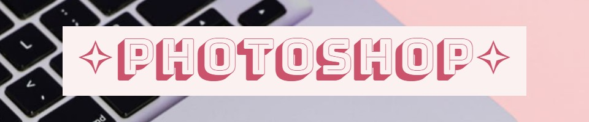
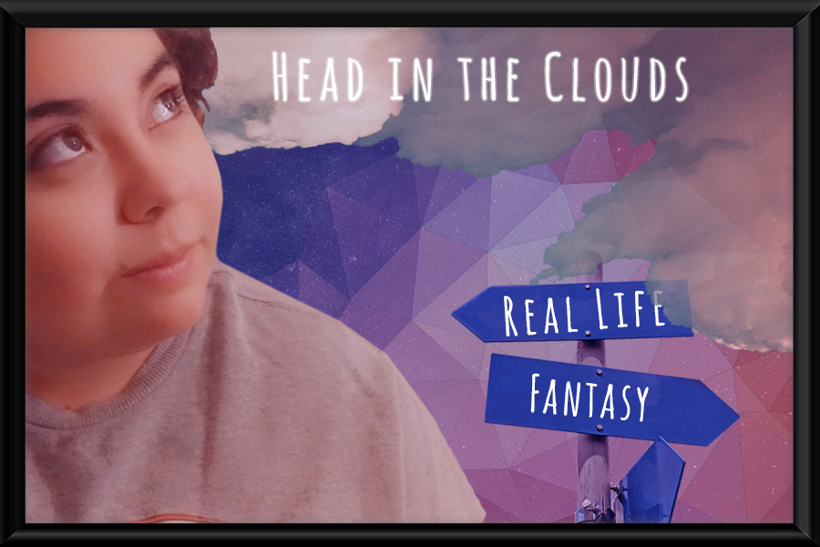

⳾*⑅*❀⑅*❀⑅*❀⑅*❀⑅*❀⑅*⳾⳾*⑅*❀⑅*❀⑅*❀⑅*❀⑅*❀⑅*⳾⳾*⑅*❀⑅*❀⑅*❀⑅*❀⑅*❀⑅*⳾⳾*⑅*❀⑅*❀⑅*❀⑅*❀⑅*❀⑅*⳾
‧͙⁺˚*･༓☾Home☽༓･*˚⁺‧͙ |
‧͙⁺˚*･༓☾Raster Project☽༓･*˚⁺‧͙ |
‧͙⁺˚*･༓☾Vector Project☽༓･*˚⁺‧͙ |
‧͙⁺˚*･༓☾Animation Project☽༓･*˚⁺‧͙ |
‧͙⁺˚*･༓☾InDesign Project☽༓･*˚⁺‧͙ |
‧͙⁺˚*･༓☾Contact Me☽༓･*˚⁺‧͙
⳾*⑅*❀⑅*❀⑅*❀⑅*❀⑅*❀⑅*⳾⳾*⑅*❀⑅*❀⑅*❀⑅*❀⑅*❀⑅*⳾⳾*⑅*❀⑅*❀⑅*❀⑅*❀⑅*❀⑅*⳾⳾*⑅*❀⑅*❀⑅*❀⑅*❀⑅*❀⑅*⳾

Our very first project was to do a raster “selfie”. It didn’t have to be a picture of us, but something that represented us. I decided to do a selfie anyways because I really wanted a challenge! The theme that I went for this project related to dreaming. I tend to be someone
Who constantly dreams of things, whether it's a big or small goal I want to obtain in life. I decided to go that route and go with the saying “Head in the clouds” because I also tend to dream about things that aren’t quite so obtainable, but I dream it nonetheless!
I really enjoyed doing this project because I have had some prior experiences with photoshop before this project! So when this project came along, I decided I wanted to challenge myself a bit creatively and see where the finished project would end up. I think I liked how it ended up looking, but if I had more time to work on it I would have spent more time adding extra things to it.